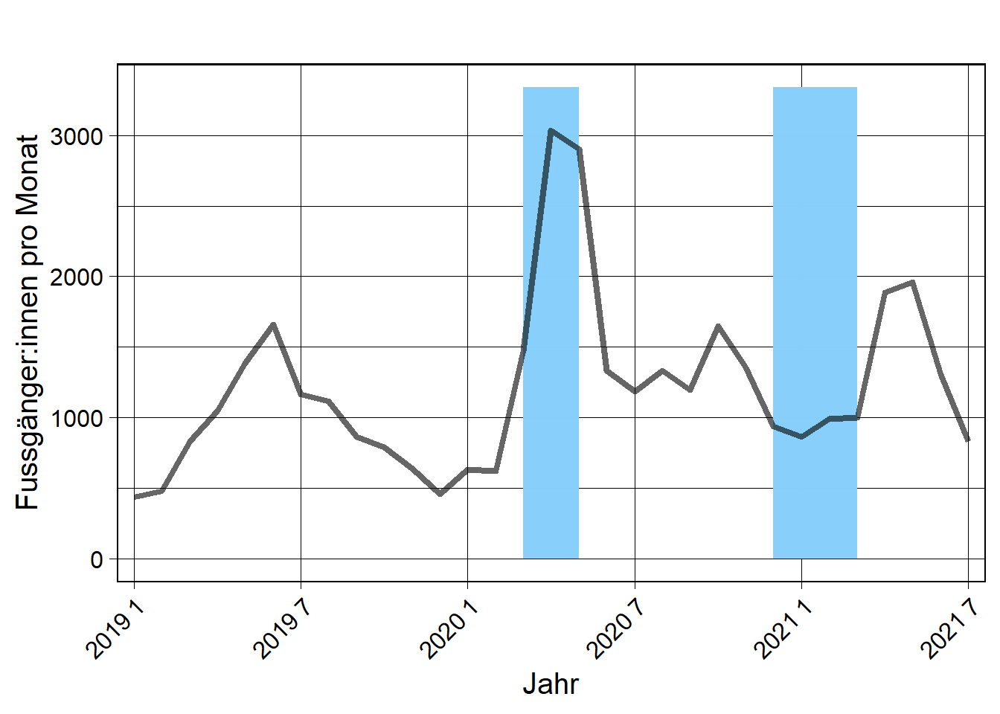
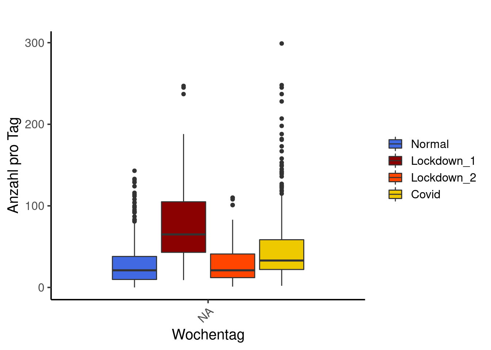
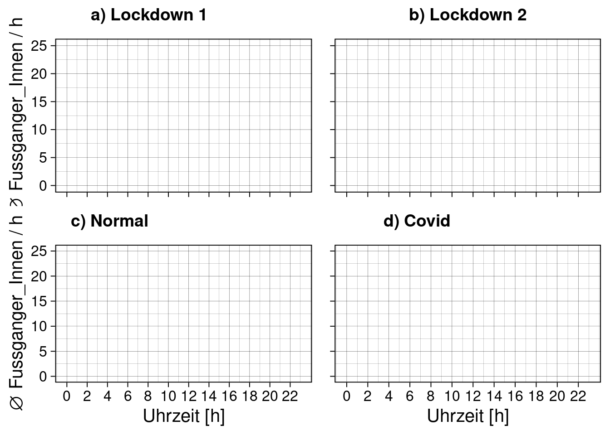
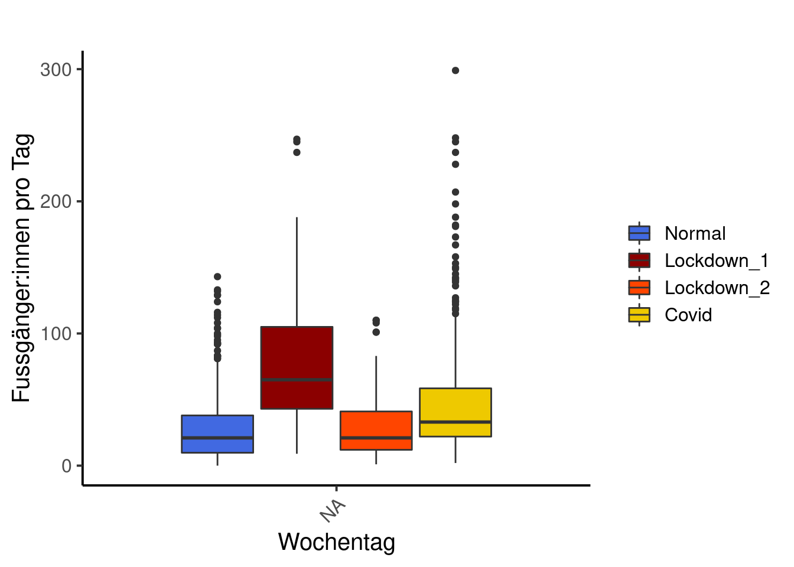
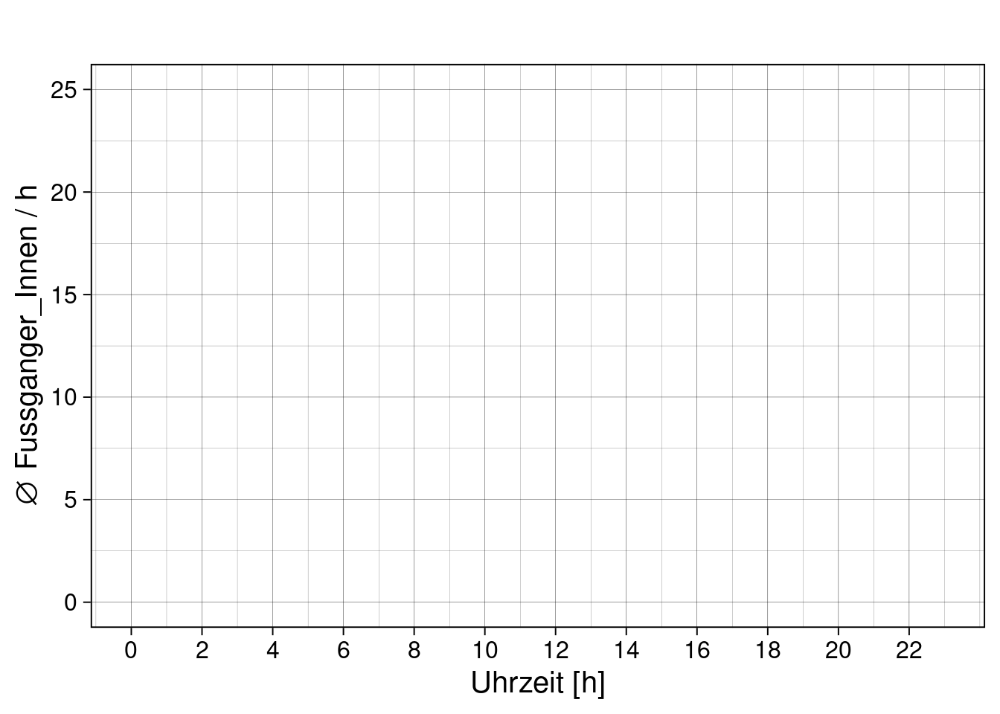

6. Übung
# Benoetigte Bibliotheken ####
library(tidyverse) # Data wrangling und piping── Attaching packages ─────────────────────────────────────── tidyverse 1.3.2 ──
✔ ggplot2 3.3.6 ✔ purrr 0.3.4
✔ tibble 3.1.8 ✔ dplyr 1.0.9
✔ tidyr 1.2.0 ✔ stringr 1.4.1
✔ readr 2.1.2 ✔ forcats 0.5.2
── Conflicts ────────────────────────────────────────── tidyverse_conflicts() ──
✖ dplyr::filter() masks stats::filter()
✖ dplyr::lag() masks stats::lag()library(lubridate) # Arbeiten mit Datumsformaten
Attaching package: 'lubridate'
The following objects are masked from 'package:base':
date, intersect, setdiff, unionlibrary(data.table)# schnelles Dateneinlesen
Attaching package: 'data.table'
The following objects are masked from 'package:lubridate':
hour, isoweek, mday, minute, month, quarter, second, wday, week,
yday, year
The following objects are masked from 'package:dplyr':
between, first, last
The following object is masked from 'package:purrr':
transposelibrary(ggpubr) # to arrange multiple plots in one graph
library(PerformanceAnalytics) # Plotte KorrelationsmatrixLoading required package: xts
Loading required package: zoo
Attaching package: 'zoo'
The following objects are masked from 'package:base':
as.Date, as.Date.numeric
Attaching package: 'xts'
The following objects are masked from 'package:data.table':
first, last
The following objects are masked from 'package:dplyr':
first, last
Attaching package: 'PerformanceAnalytics'
The following object is masked from 'package:graphics':
legendlibrary(MuMIn) # Multi-Model Inference
library(AICcmodavg)# Modellaverageing
Attaching package: 'AICcmodavg'
The following objects are masked from 'package:MuMIn':
AICc, DIC, importancelibrary(fitdistrplus)# Prueft die Verteilung in DatenLoading required package: MASS
Attaching package: 'MASS'
The following object is masked from 'package:dplyr':
select
Loading required package: survivallibrary(lme4) # Multivariate ModelleLoading required package: Matrix
Attaching package: 'Matrix'
The following objects are masked from 'package:tidyr':
expand, pack, unpack
Attaching package: 'lme4'
The following object is masked from 'package:AICcmodavg':
checkConvlibrary(blmeco) # Bayesian data analysis using linear models
library(sjPlot) # Plotten von Modellergebnissen (tab_model)#refugeeswelcomelibrary(lattice) # einfaches plotten von Zusammenhängen zwischen Variablen# Start und Ende ####
# Untersuchungszeitraum, ich waehle hier das Jahr 2019 bis und mit Sommer 2021
depo_start <- as.Date("2019-01-01")
depo_end <- as.Date("2021-7-27")
# Start und Ende Lockdown
# definieren, wichtig fuer die spaeteren Auswertungen
lock_1_start_2020 <- as.Date("2020-03-16")
lock_1_end_2020 <- as.Date("2020-05-11")
lock_2_start_2021 <- as.Date("2020-12-22")
lock_2_end_2021 <- as.Date("2021-03-01")
# Ebenfalls muessen die erste und letzte Kalenderwoche der Untersuchungsfrist definiert werden
# Diese werden bei Wochenweisen Analysen ebenfalls ausgeklammert da sie i.d.R. unvollstaendig sind
KW_start <- week(depo_start)
KW_end <- week(depo_end)
# Erster und letzter Tag der Ferien
# je nach Untersuchungsdauer muessen hier weitere oder andere Ferienzeiten ergaenzt werden
# (https://www.schulferien.org/schweiz/ferien/2020/)
Fruehlingsferien_2019_start <- as.Date("2019-04-13")
Fruehlingsferien_2019_ende <- as.Date("2019-04-28")
Sommerferien_2019_start <- as.Date("2019-07-6")
Sommerferien_2019_ende <- as.Date("2019-08-18")
Herbstferien_2019_start <- as.Date("2019-10-05")
Herbstferien_2019_ende <- as.Date("2019-10-20")
Winterferien_2019_start <- as.Date("2019-12-21")
Winterferien_2019_ende <- as.Date("2020-01-02")
Fruehlingsferien_2020_start <- as.Date("2020-04-11")
Fruehlingsferien_2020_ende <- as.Date("2020-04-26")
Sommerferien_2020_start <- as.Date("2020-07-11")
Sommerferien_2020_ende <- as.Date("2020-08-16")
Herbstferien_2020_start <- as.Date("2020-10-03")
Herbstferien_2020_ende <- as.Date("2020-10-18")
Winterferien_2020_start <- as.Date("2020-12-19")
Winterferien_2020_ende <- as.Date("2021-01-03")
Fruehlingsferien_2021_start <- as.Date("2021-04-24")
Fruehlingsferien_2021_ende <- as.Date("2021-05-09")
Sommerferien_2021_start <- as.Date("2021-07-17")
#.################################################################################################
# 1. DATENIMPORT #####
#.################################################################################################
# Beim Daten einlesen koennen sogleich die Datentypen und erste Bereinigungen vorgenommen werden
# 1.1 Zaehldaten ####
# Die Zaehldaten des Wildnispark wurden vorgaengig bereinigt. z.B. wurden Stundenwerte
# entfernt, an denen am Zaehler Wartungsarbeiten stattgefunden haben.
# lese die Daten mithilfe der Bibliothek data.table ein (alternative zu read_csv und dergleichen).
# Je nach Bedarf muss der Speicherort sowie der Dateiname angepasst werden
depo <- fread(here("data","211_sihlwaldstrasse_2017_2021.csv"))
# Hinweis zu den Daten:
# In hourly analysis format, the data at 11:00 am corresponds to the counts saved between
# 11:00 am and 12:00 am.
# Anpassen der Datentypen und erstes Sichten
str(depo)Classes 'data.table' and 'data.frame': 40152 obs. of 5 variables:
$ DatumUhrzeit: chr "01.01.2017 00:00" "01.01.2017 01:00" "01.01.2017 02:00" "01.01.2017 03:00" ...
$ Fuss_IN : int 0 0 0 0 0 0 0 0 0 0 ...
$ Fuss_OUT : int 0 0 0 0 0 0 0 0 0 0 ...
$ Velo_IN : int 0 0 0 0 0 0 0 0 0 0 ...
$ Velo_OUT : int 0 0 0 0 0 0 0 0 0 0 ...
- attr(*, ".internal.selfref")=<externalptr> depo <- depo %>%
mutate(Datum_Uhrzeit = as.character(DatumUhrzeit)) %>%
separate(Datum_Uhrzeit, into = c("Datum", "Zeit"), sep = " ")%>%
mutate(Datum = as.Date(Datum, format = "%d.%m.%Y")) %>%
# Schneide das df auf den gewuenschten Zeitraum zu
filter(Datum >= depo_start, Datum <= depo_end) # das Komma hat die gleiche Funktion wie ein &
# In dieser Auswertung werden nur Velos betrachtet!
depo <- depo[,-c(1,4,5), drop=FALSE] # mit diesem Befehl lassen wir Spalten "fallen",
# aendern aber nichts an der Form des data.frames
# Berechnen des Totals, da dieses in den Daten nicht vorhanden ist
depo <- depo%>%
mutate(Total = Fuss_IN + Fuss_OUT)
# Entferne die NA's in dem df.
depo <- na.omit(depo)
# 1.2 Meteodaten ####
# Einlesen
meteo <- fread(here("data","order_97149_data.txt"))
# Datentypen setzen
# Das Datum wird als Integer erkannt. Zuerst muss es in Text umgewaldelt werden aus dem dann
# das eigentliche Datum herausgelesen werden kann
meteo <- transform(meteo, time = as.Date(as.character(time), "%Y%m%d"))
# Die eigentlichen Messwerte sind alle nummerisch
meteo <- meteo%>%
mutate(tre200jx = as.numeric(tre200jx))%>%
mutate(rre150j0 = as.numeric(rre150j0))%>%
mutate(sremaxdv = as.numeric(sremaxdv)) %>%
filter(time >= depo_start, time <= depo_end) # schneide dann auf UntersuchungsdauerWarning in mask$eval_all_mutate(quo): NAs introduced by coercion
Warning in mask$eval_all_mutate(quo): NAs introduced by coercion# Was ist eigentlich Niederschlag:
# https://www.meteoschweiz.admin.ch/home/wetter/wetterbegriffe/niederschlag.html
# Filtere Werte mit NA
meteo <- meteo %>%
filter(!is.na(stn)) %>%
filter(!is.na(time))%>%
filter(!is.na(tre200jx))%>%
filter(!is.na(rre150j0))%>%
filter(!is.na(sremaxdv))
# Pruefe ob alles funktioniert hat
str(meteo)Classes 'data.table' and 'data.frame': 939 obs. of 5 variables:
$ stn : chr "WAE" "WAE" "WAE" "WAE" ...
$ time : Date, format: "2019-01-01" "2019-01-02" ...
$ tre200jx: num 4.9 2.7 0 1.5 2.3 2.2 2.8 4.1 2 -0.5 ...
$ rre150j0: num 0 0 0 0 8.4 3.9 0 8.1 1.8 4.6 ...
$ sremaxdv: num 0 0 58 73 0 0 0 0 0 0 ...
- attr(*, ".internal.selfref")=<externalptr> sum(is.na(meteo)) # zeigt die Anzahl NA's im data.frame an[1] 0#.################################################################################################
# 2. VORBEREITUNG DER DATEN #####
#.################################################################################################
# 2.1 Convinience Variablen ####
# fuege dem Dataframe (df) die Wochentage hinzu
depo <- depo %>%
mutate(Wochentag = weekdays(Datum)) %>%
# R sortiert die Levels aplhabetisch. Da das in unserem Fall aber sehr unpraktisch ist,
# muessen die Levels manuell manuell bestimmt werden
mutate(Wochentag = base::factor(Wochentag,
levels = c("Montag", "Dienstag", "Mittwoch",
"Donnerstag", "Freitag", "Samstag", "Sonntag"))) %>%
# Werktag oder Wochenende hinzufuegen
mutate(Wochenende = if_else(Wochentag == "Montag" | Wochentag == "Dienstag" |
Wochentag == "Mittwoch" | Wochentag == "Donnerstag" |
Wochentag == "Freitag", "Werktag", "Wochenende"))%>%
#Kalenderwoche hinzufuegen
mutate(KW= week(Datum))%>%
# monat und Jahr
mutate(Monat = month(Datum)) %>%
mutate(Jahr = year(Datum))
#Lockdown
# Hinweis: ich mache das nachgelagert, da ich die Erfahrung hatte, dass zu viele
# Operationen in einem Schritt auch schon mal durcheinander erzeugen koennen.
# Hinweis II: Wir packen alle Phasen (normal, die beiden Lockdowns und Covid aber ohne Lockdown)
# in eine Spalte --> long ist schoener als wide
depo <- depo %>%
mutate(Phase = if_else(Datum >= lock_1_start_2020 & Datum <= lock_1_end_2020,
"Lockdown_1",
if_else(Datum >= lock_2_start_2021 & Datum <= lock_2_end_2021,
"Lockdown_2",
if_else(Datum < lock_1_start_2020,
"Normal", "Covid"))))
# hat das gepklappt?!
unique(depo$Phase)[1] "Normal" "Lockdown_1" "Covid" "Lockdown_2"# aendere die Datentypen
depo <- depo %>%
mutate(Wochenende = as.factor(Wochenende)) %>%
mutate(KW = factor(KW)) %>%
# mit factor() koennen die levels direkt einfach selbst definiert werden.
# wichtig: speizfizieren, dass aus R base, ansonsten kommt es zu einem
# mix-up mit anderen packages
mutate(Phase = base::factor(Phase, levels = c("Normal", "Lockdown_1", "Lockdown_2", "Covid")))
str(depo)Classes 'data.table' and 'data.frame': 22088 obs. of 11 variables:
$ Fuss_IN : int 0 0 0 0 0 0 0 0 0 0 ...
$ Fuss_OUT : int 0 0 0 0 0 0 0 0 0 0 ...
$ Datum : Date, format: "2019-01-01" "2019-01-01" ...
$ Zeit : chr "00:00" "01:00" "02:00" "03:00" ...
$ Total : int 0 0 0 0 0 0 0 0 0 0 ...
$ Wochentag : Factor w/ 7 levels "Montag","Dienstag",..: NA NA NA NA NA NA NA NA NA NA ...
$ Wochenende: Factor w/ 0 levels: NA NA NA NA NA NA NA NA NA NA ...
$ KW : Factor w/ 53 levels "1","2","3","4",..: 1 1 1 1 1 1 1 1 1 1 ...
$ Monat : int 1 1 1 1 1 1 1 1 1 1 ...
$ Jahr : int 2019 2019 2019 2019 2019 2019 2019 2019 2019 2019 ...
$ Phase : Factor w/ 4 levels "Normal","Lockdown_1",..: 1 1 1 1 1 1 1 1 1 1 ...
- attr(*, ".internal.selfref")=<externalptr> # Fuer einige Auswertungen muss auf die Stunden als nummerischer Wert zurueckgegriffen werden
depo$Stunde <- as.numeric(format(as.POSIXct(depo$Zeit,format="%H:%M"),"%H"))
# Die Daten wurden kalibriert. Wir runden sie fuer unserer Analysen auf Ganzzahlen
depo$Total <- round(depo$Total, digits = 0)
depo$Fuss_IN <- round(depo$Fuss_IN, digits = 0)
depo$Fuss_OUT <- round(depo$Fuss_OUT, digits = 0)
# 2.3 Aggregierung der Stundendaten zu ganzen Tagen ####
# Zur Berechnung von Kennwerten ist es hilfreich, wenn neben den Stundendaten auch auf Ganztagesdaten
# zurueckgegriffen werden kann
# hier werden also pro Nutzergruppe und Richtung die Stundenwerte pro Tag aufsummiert
depo_d <- depo %>%
group_by(Datum, Wochentag, Wochenende, KW, Monat, Jahr, Phase) %>%
summarise(Total = sum(Fuss_IN + Fuss_OUT),
Fuss_IN = sum(Fuss_IN),
Fuss_OUT = sum(Fuss_OUT)) `summarise()` has grouped output by 'Datum', 'Wochentag', 'Wochenende', 'KW',
'Monat', 'Jahr'. You can override using the `.groups` argument.# Wenn man die Convinience Variablen als grouping variable einspeisst, dann werden sie in
# das neue df uebernommen und muessen nicht nochmals hinzugefuegt werden
# pruefe das df
head(depo_d)# A tibble: 6 × 10
# Groups: Datum, Wochentag, Wochenende, KW, Monat, Jahr [6]
Datum Wochentag Wochenende KW Monat Jahr Phase Total Fuss_IN Fuss_…¹
<date> <fct> <fct> <fct> <int> <int> <fct> <dbl> <dbl> <dbl>
1 2019-01-01 <NA> <NA> 1 1 2019 Normal 21 11 10
2 2019-01-02 <NA> <NA> 1 1 2019 Normal 36 20 16
3 2019-01-03 <NA> <NA> 1 1 2019 Normal 26 14 12
4 2019-01-04 <NA> <NA> 1 1 2019 Normal 10 7 3
5 2019-01-05 <NA> <NA> 1 1 2019 Normal 12 8 4
6 2019-01-06 <NA> <NA> 1 1 2019 Normal 25 15 10
# … with abbreviated variable name ¹Fuss_OUT# Gruppiere die Werte nach Monat
depo_m <- depo %>%
group_by(Jahr, Monat) %>%
summarise(Total = sum(Total)) `summarise()` has grouped output by 'Jahr'. You can override using the
`.groups` argument.# sortiere das df aufsteigend (nur das es sicher stimmt)
depo_m <- as.data.frame(depo_m)
depo_m[
with(depo_m, order(Jahr, Monat)),] Jahr Monat Total
1 2019 1 437
2 2019 2 479
3 2019 3 832
4 2019 4 1050
5 2019 5 1385
6 2019 6 1658
7 2019 7 1162
8 2019 8 1115
9 2019 9 865
10 2019 10 790
11 2019 11 635
12 2019 12 460
13 2020 1 633
14 2020 2 623
15 2020 3 1473
16 2020 4 3038
17 2020 5 2905
18 2020 6 1333
19 2020 7 1185
20 2020 8 1335
21 2020 9 1197
22 2020 10 1650
23 2020 11 1353
24 2020 12 935
25 2021 1 862
26 2021 2 992
27 2021 3 1002
28 2021 4 1888
29 2021 5 1962
30 2021 6 1304
31 2021 7 831# mache dann aus Jahr und Monat faktoren
depo_m <- depo_m %>%
mutate(Jahr = as.factor(Jahr)) %>%
mutate(Monat = as.factor(Monat)) %>%
mutate(Ym = paste(Jahr, Monat)) %>% # und mache eine neue Spalte, in der Jahr und
mutate(Ym= factor(Ym, levels=unique(Ym))) # Monat in zusammen sind
#.################################################################################################
# 3. DESKRIPTIVE ANALYSE UND VISUALISIERUNG #####
#.################################################################################################
# 3.1 Verlauf der Besuchszahlen / m ####
# Monatliche Summen am Standort
# wann beginnt die Datenreihe schon wieder?
first(depo_m$Ym)[1] 2019 1
31 Levels: 2019 1 2019 2 2019 3 2019 4 2019 5 2019 6 2019 7 2019 8 ... 2021 7# und wann ist die fertig?
last(depo_m$Ym)[1] 2021 7
31 Levels: 2019 1 2019 2 2019 3 2019 4 2019 5 2019 6 2019 7 2019 8 ... 2021 7# Plotte
ggplot(depo_m, mapping = aes(Ym, Total, group = 1))+ # group 1 braucht R, dass aus den Einzelpunkten ein Zusammenhang hergestellt wird
#zeichne Lockdown 1
geom_rect(mapping = aes(xmin="2020 3", xmax="2020 5",
ymin =0, ymax=max(Total+(Total/100*10))),
fill = "lightskyblue", alpha = 0.4, colour = NA)+
#zeichne Lockdown 2
geom_rect(mapping = aes(xmin="2020 12", xmax="2021 3",
ymin =0, ymax=max(Total+(Total/100*10))),
fill = "lightskyblue", alpha = 0.4, colour = NA)+
geom_line(alpha = 0.6, size = 1.5)+
scale_x_discrete(breaks = c("2019 1", "2019 7","2019 1","2020 1","2020 7","2021 1","2021 7"),
labels = c("2019 1", "2019 7","2019 1","2020 1","2020 7","2021 1","2021 7"))+
labs(title= "", y="Fuss pro Monat", x = "Jahr")+
theme_linedraw(base_size = 15)+
theme(axis.text.x = element_text(angle = 45, vjust = 1, hjust=1))
# 3.2 Wochengang ####
# mean / d / phase
mean_phase_wd <- depo_d %>%
group_by(Wochentag, Phase) %>%
summarise(Total = mean(Total))`summarise()` has grouped output by 'Wochentag'. You can override using the
`.groups` argument.#plot
ggplot(data = depo_d)+
geom_boxplot(mapping = aes(x= Wochentag, y = Total, fill = Phase))+
labs(title="", y= "Anzahl pro Tag")+
scale_fill_manual(values = c("royalblue", "red4", "orangered", "gold2"))+
theme_classic(base_size = 15)+
theme(axis.text.x = element_text(angle = 45, vjust = 1, hjust=1),
legend.title = element_blank())
# Statistik: Unterschied WE und WO während Lockdown 1
t.test(depo_d$Total[depo_d$Phase == "Lockdown_1" & depo_d$Wochenende=="Werktag"],
depo_d$Total [depo_d$Phase == "Lockdown_1" & depo_d$Wochenende=="Wochenende"])Error in t.test.default(depo_d$Total[depo_d$Phase == "Lockdown_1" & depo_d$Wochenende == : not enough 'x' observations# 3.3 Tagesgang ####
# Bei diesen Berechnungen wird jeweils der Mittelwert pro Stunde berechnet.
# wiederum nutzen wir dafuer "pipes"
Mean_h <- depo %>%
group_by(Wochentag, Stunde, Phase) %>%
summarise(Total = mean(Total)) `summarise()` has grouped output by 'Wochentag', 'Stunde'. You can override
using the `.groups` argument.# transformiere fuer Plotting
Mean_h<- reshape2::melt(Mean_h,measure.vars = c("Total"),
value.name = "Total",variable.name = "Gruppe")Error in loadNamespace(x): there is no package called 'reshape2'# Plotte den Tagesgang, unterteilt nach Wochentagen
# Normal
tag_norm <- ggplot(subset(Mean_h, Phase %in% c("Normal")),
mapping=aes(x = Stunde, y = Total, colour = Wochentag, linetype = Wochentag))+
geom_line(size = 2)+
scale_colour_viridis_d()+
scale_linetype_manual(values = c(rep("solid", 5), "twodash", "twodash"))+
scale_x_continuous(breaks = c(seq(0, 23, by = 2)), labels = c(seq(0, 23, by = 2)))+
labs(x="Uhrzeit [h]", y= "∅ Fussganger_Innen / h", title = "")+
lims(y = c(0,25))+
theme_linedraw(base_size = 15)+
theme(legend.position = "right")
# Lockdown 1
tag_lock_1 <- ggplot(subset(Mean_h, Phase %in% c("Lockdown_1")),
mapping=aes(x = Stunde, y = Total, colour = Wochentag, linetype = Wochentag))+
geom_line(size = 2)+
scale_colour_viridis_d()+
scale_linetype_manual(values = c(rep("solid", 5), "twodash", "twodash"))+
scale_x_continuous(breaks = c(seq(0, 23, by = 2)), labels = c(seq(0, 23, by = 2)))+
labs(x="Uhrzeit [h]", y= "∅ Fussganger_Innen / h", title = "")+
lims(y = c(0,25))+
theme_linedraw(base_size = 15)+
theme(legend.position = "right")
# Lockdown 2
tag_lock_2 <- ggplot(subset(Mean_h, Phase %in% c("Lockdown_2")),
mapping=aes(x = Stunde, y = Total, colour = Wochentag, linetype = Wochentag))+
geom_line(size = 2)+
scale_colour_viridis_d()+
scale_linetype_manual(values = c(rep("solid", 5), "twodash", "twodash"))+
scale_x_continuous(breaks = c(seq(0, 23, by = 2)), labels = c(seq(0, 23, by = 2)))+
labs(x="Uhrzeit [h]", y= "∅ Fussganger_Innen / h", title = "")+
lims(y = c(0,25))+
theme_linedraw(base_size = 15)+
theme(legend.position = "right")
# Covid
tag_covid <- ggplot(subset(Mean_h, Phase %in% c("Covid")),
mapping=aes(x = Stunde, y = Total, colour = Wochentag, linetype = Wochentag))+
geom_line(size = 2)+
scale_colour_viridis_d()+
scale_linetype_manual(values = c(rep("solid", 5), "twodash", "twodash"))+
scale_x_continuous(breaks = c(seq(0, 23, by = 2)), labels = c(seq(0, 23, by = 2)))+
labs(x="Uhrzeit [h]", y= "∅ Fussganger_Innen / h", title = "")+
lims(y = c(0,25))+
theme_linedraw(base_size = 15)+
theme(legend.position = "right")
# Arrange und Export Tagesgang
ggarrange(tag_lock_1+ # plot 1 aufrufen
rremove("x.text")+ # plot 1 braucht es nicht alle Achsenbeschriftungen
rremove("x.title"),
tag_lock_2+ # plot 2 aufrufen
rremove("y.text")+ # bei plot 2 brauchen wir keine Achsenbeschriftung
rremove("y.title")+
rremove("x.text")+
rremove("x.title"),
tag_norm,
tag_covid+
rremove("y.text")+
rremove("y.title"),
ncol = 2, nrow = 2, # definieren, wie die plots angeordnet werden
heights = c(0.9, 1), # beide plots sind wegen der fehlenden Beschriftung nicht gleich hoch
widths = c(1,0.9),
labels = c("a) Lockdown 1", "b) Lockdown 2", "c) Normal", "d) Covid"),
label.x = 0.1, # wo stehen die Plottitel
label.y = 0.99,
common.legend = TRUE, legend = "bottom") # wir brauchen nur eine Legende, untenWarning: Removed 24 row(s) containing missing values (geom_path).
Removed 24 row(s) containing missing values (geom_path).
Removed 24 row(s) containing missing values (geom_path).
Removed 24 row(s) containing missing values (geom_path).
Removed 24 row(s) containing missing values (geom_path).
Removed 24 row(s) containing missing values (geom_path).
Removed 24 row(s) containing missing values (geom_path).
Removed 24 row(s) containing missing values (geom_path).
# 3.4 Kennzahlen ####
total_phase <- depo_d %>%
# gruppiere nach Phasen inkl. Normal. Diese Levels haben wir bereits definiert
group_by(Phase) %>%
summarise(Total = sum(Total),
IN = sum(Fuss_IN),
OUT = sum(Fuss_OUT))
# mean besser Vergleichbar, da Zeitreihen unterschiedlich lange
mean_phase_d <- depo_d %>%
group_by(Phase) %>%
summarise(Total = mean(Total),
IN = mean(Fuss_IN),
OUT = mean(Fuss_OUT))
# berechne prozentuale Richtungsverteilung
mean_phase_d <- mean_phase_d %>%
mutate(Proz_IN = round(100/Total*IN, 1)) %>% # berechnen und auf eine Nachkommastelle runden
mutate(Proz_OUT = round(100/Total*OUT,1))
# selektiere absolute Zahlen
# behalte rel. Spalten (nur die relativen Prozentangaben)
mean_phase_d_abs <- mean_phase_d[,-c(2,5,6), drop=FALSE]
# transformiere fuer Plotting
mean_phase_d_abs <- reshape2::melt(mean_phase_d_abs,
measure.vars = c("IN","OUT"),
value.name = "Durchschnitt",variable.name = "Gruppe")Error in loadNamespace(x): there is no package called 'reshape2'# selektiere relative Zahlen
# behalte rel. Spalten (nur die relativen Prozentangaben)
mean_phase_d_proz <- mean_phase_d[,-c(2:4), drop=FALSE]
# transformiere fuer Plotting
mean_phase_d_proz <- reshape2::melt(mean_phase_d_proz,
measure.vars = c("Proz_IN","Proz_OUT"),
value.name = "Durchschnitt",variable.name = "Gruppe")Error in loadNamespace(x): there is no package called 'reshape2'# Visualisierung abs
abs <- ggplot(data = mean_phase_d_abs, mapping = aes(x = Gruppe, y = Durchschnitt, fill = Phase))+
geom_col(position = "dodge", width = 0.8)+
scale_fill_manual(values = c("royalblue", "red4", "orangered", "gold2"), name = "Phase")+
scale_x_discrete(labels = c("IN", "OUT"))+
labs(y = "Durchschnitt [mean]", x= "Bewegungsrichtung")+
theme_classic(base_size = 15)+
theme(legend.position = "bottom")
# Visualisierung %
proz <- ggplot(data = mean_phase_d_proz, mapping = aes(x = Gruppe, y = Durchschnitt, fill = Phase))+
geom_col(position = "dodge", width = 0.8)+
scale_fill_manual(values = c("royalblue", "red4", "orangered", "gold2"), name = "Phase")+
scale_x_discrete(labels = c("IN", "OUT"))+
labs(y = "Durchschnitt [%]", x= "Bewegungsrichtung")+
theme_classic(base_size = 15)+
theme(legend.position = "bottom")
# Arrange und Export Verteilung
ggarrange(abs, # plot 1 aufrufen
proz, # plot 2 aufrufen
ncol = 2, nrow = 1, # definieren, wie die plots angeordnet werden
heights = c(1), # beide sind bleich hoch
widths = c(1,0.95), # plot 2 ist aufgrund der fehlenden y-achsenbesch. etwas schmaler
labels = c("a) Absolute Verteilung", "b) Relative Verteilung"),
label.x = 0, # wo stehen die labels
label.y = 1.0,
common.legend = TRUE, legend = "bottom") # wir brauchen nur eine Legende, untenError in FUN(X[[i]], ...): object 'Durchschnitt' not foundAufgabe 1: Verlauf der Besuchszahlen / m
Nachdem wir die Projektstruktur aufgebaut haben und die Daten vorbereitet sind, machen wir uns an die deskriptive Analyse. Dies macht eigentlich immer Sinn. Bevor mach sich an die schliessende Statistik macht, muss man ein “Gefühl” für die Daten bekommen. Dies funktioniert am einfachsten mit deskriptiven, explorativen Analysen.
Wir interessieren uns in den Analysen grundsätzlich für 4 Zeitabschnitte:
- Normal (vom Start der Erhebungen bis vor dem ersten Lockdown)
- Lockdown 1
- Lockdown 2
- Seit Covid, aber nicht während eines Lockdowns
Wir haben relativ lange Zeitreihen. Zur Visualisierung des generellen Trends greifen wir darum auf die aggregierten Daten zurück - das macht den Plot übersichtlicher und damit aussagekräftiger.
- Plottet den Verlauf der monatlichen Besuchszahlen an eurer Zählstelle. Auf der x-Achse steht dabei dabei Jahr und Monat (gespeichert im df depo_m), auf der y-Achse die monatlichen Besuchszahlen. Zeichnet auch die beiden Lockdown ein (Hinweis: rundet das Start- und Enddatum des Lockdowns auf den Monat, da im Plot die monatlichen Zahlen gezeigt werden).
Haltet euch dabei an untenstehenden Plot:
Hinweis: - Nutzt zum plotten ggplot() - folgende Codeschnipsel helfen euch:
ggplot(data = depo_m, mapping = aes(Ym, Total, group = 1))+ # group 1 braucht R, dass aus den Einzelpunkten ein Zusammenhang hergestellt wird
# zeichne Lockdown 1; ein einfaches Rechteck. bestimme mit min und max die Dimensionen
geom_rect(mapping = aes(xmin="2020 3", xmax="2020 5",
ymin =0, ymax=max(Total+(Total/100*10))), # das Rechteck soll 10 % grösser als die maximale Besuchszahl sein
fill = "lightskyblue", alpha = 0.4, colour = NA)+
# zeichne Lockdown 2
...+
# zeichne die Linie
geom_line(...)+
# bestimme manuell, wo auf der x-Achse die breaks sind und wie diese angeschrieben werden sollen
scale_x_discrete(breaks = c("...", "...", ...),
labels = c("...", "...", ...))+
theme_linedraw(base_size = 15)+
...- Exportiert euren Plot mit ggsave() nach results. Breite = 20, Höhe = 10, Einheiten = cm, dpi = 1000
Aufgabe 2: Wochengang
Nachdem wir nun wissen, wie sich die Besuchszahlen während der Untersuchungsdauer monatlich entwickelt haben, möchten wir genauer untersuchen, wie sich die Zahlen je nach Phase (Normal, Lockdown 1. Lockdown 2 und Covid) auf die Wochentage verteilen.
2a)
- Berechnet zuerst die Totale Anzahl pro Wochentag pro Phase.
mean_phase_wd <- depo_d %>%
group_by(...) %>%
...- Speichert das als .csv
write.csv(mean_phase_wd, "results/mean_phase_wd.csv")2b)
- Erstellt einen Boxplot nach untenstehender Vorgabe:

Hinweis: - Nutzt zum plotten ggplot() - folgende Codeschnipsel helfen euch:
ggplot(data = depo_d)+
geom_boxplot(mapping = aes(x= Wochentag, y = Total, fill = Phase))+
...- Exportiert auch diesen Plot mit ggsave(). Welche Breite und Höhe passt hier?
2c)
Sind die Unterschiede zwischen Werktag und Wochenende wirklich signifikant? Falls ja, in allen Phasen oder nur während bestimmter?
- Prüft das pro Phase mit einem einfachen t.test.
Aufgabe 3: Tagesgang
Vom Grossen zum Kleinen, von der Übersicht ins Detail. Jetzt widmen wir uns dem Tagesgang, das heisst der Verteilung der Besuchenden auf die 24 Tagesstunden je nach Phase.
3a)
- Berechnet zuerst den Mittelwert der Totalen Besuchszahlen pro Wochentag pro Stunde pro Phase. (ganz ähnlich wie unter 2a) und speichert das df unter Mean_h.
ggplots haben Daten lieber im Format long als wide.
3b)
- Plottet den Tagesgang, unterteilt nach den 7 Wochentagen nun für unsere 4 Phasen.
Warning: Removed 24 row(s) containing missing values (geom_path).
Für die Phase “Normal” benutze ich folgenden Codeschnipsel. Speichert den Plot ab (hier: tag_norm).
tag_norm <- ggplot(subset(Mean_h, Phase %in% c("Normal")),
mapping=aes(x = Stunde, y = Total, colour = Wochentag, linetype = Wochentag))+
...Hinweis: Achtet darauf, dass die Skalierung der y-Achse bei allen 4 Plots dieselbe ist (z.B. immer vom 0 bis 25).
3c)
- Arrangiert die vier erstellten Plots und speichert das Resultat. Das ist etwas tricky, darum hier der vollständige Code.
# Arrange und Export Tagesgang
ggarrange(tag_lock_1+ # plot 1 aufrufen
rremove("x.text")+ # plot 1 braucht es nicht alle Achsenbeschriftungen
rremove("x.title"),
tag_lock_2+ # plot 2 aufrufen
rremove("y.text")+ # bei plot 2 brauchen wir keine Achsenbeschriftung
rremove("y.title")+
rremove("x.text")+
rremove("x.title"),
tag_norm,
tag_covid+
rremove("y.text")+
rremove("y.title"),
ncol = 2, nrow = 2, # definieren, wie die plots angeordnet werden
heights = c(0.9, 1), # beide plots sind wegen der fehlenden Beschriftung nicht gleich hoch
widths = c(1,0.9),
labels = c("a) Lockdown 1", "b) Lockdown 2", "c) Normal", "d) Covid"),
label.x = 0.1, # wo stehen die Plottitel
label.y = 0.99,
common.legend = TRUE, legend = "bottom") # wir brauchen nur eine Legende, unten
ggsave("Tagesgang.png", width=25, height=25, units="cm", dpi=1000,
path = "results/")Aufgabe 4: Kennzahlen
Schliesslich berechnen wir noch einige Kennzahlen (Anzahl Passagen, Richtungsverteilung, …).
4a)
Gruppiert nach Phase und berechnet dieses mal die Summe (nicht den Durchschnitt) Total, IN und OUT (ähnlich wie in 2a und 3a).
Speichert das Ergebnis als .csv
4b)
Die Zeitreihen der 4 Phasen unterscheiden sich deutlich voneinander. Totale Summen sind da kaum miteinander vergleichbar, besser eignet sich der Durchschnitt oder der Median.
Gruppiert nach Phase und berechnet den Durchschnitt Total, IN und OUT und speichert das df unter mean_phase_d.
Ergänzt das mit der prozentualen Richtungsverteilung
mean_phase_d <- mean_phase_d %>%
mutate(Proz_IN = round(100/Total*IN, 1)) %>% # berechnen und auf eine Nachkommastelle runden
...Speichert das Ergebnis als .csv
Selektiert nun die absoluten Zahlen im df mean_phase_d sowie die relativen und speichert das jeweils in einem df mean_phase_d_abs und mean_phase_d_proz.
mean_phase_d_abs <- mean_phase_d %>% dplyr::select(-c(Total, Proz_IN, Proz_OUT))- transformiert beide df mittels pivot_longer() von wide zu long:
mean_phase_d_abs <- pivot_longer(mean_phase_d_abs, cols = c("IN","OUT"),
names_to = "Gruppe", values_to = "Durchschnitt")4c)
Nun visualisieren wie die Verteilung der absoluten und der relativen Zahlen nach Phasen in einem Barplot.
- Erstellt je einen Plot zu den absoluten und den relativen Zahlen nach den unterstehenden Vorgaben und speichert beide Plots im Environment:
Error in FUN(X[[i]], ...): object 'Durchschnitt' not foundError in FUN(X[[i]], ...): object 'Durchschnitt' not found- Arrangiert beide Plots nebeneinander und exportiert das Ergebnis (Arrangieren siehe 3c).